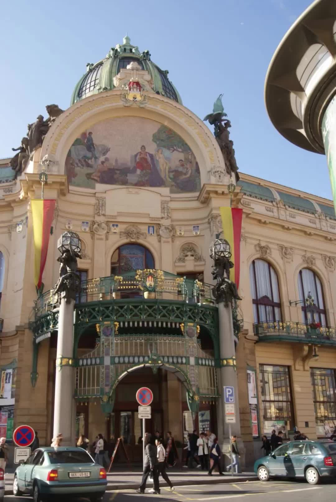
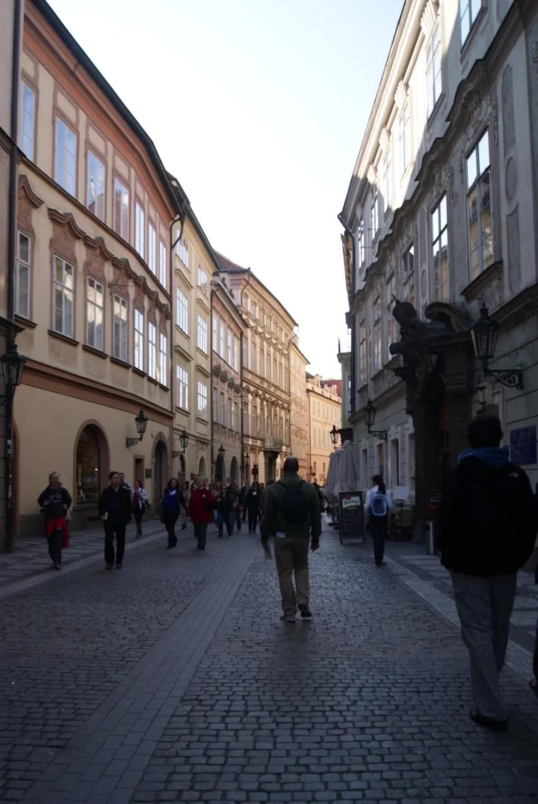
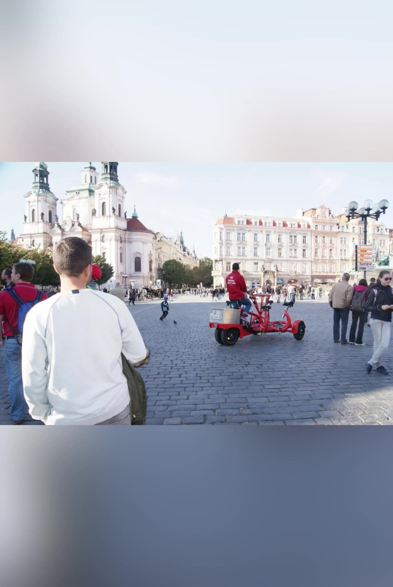
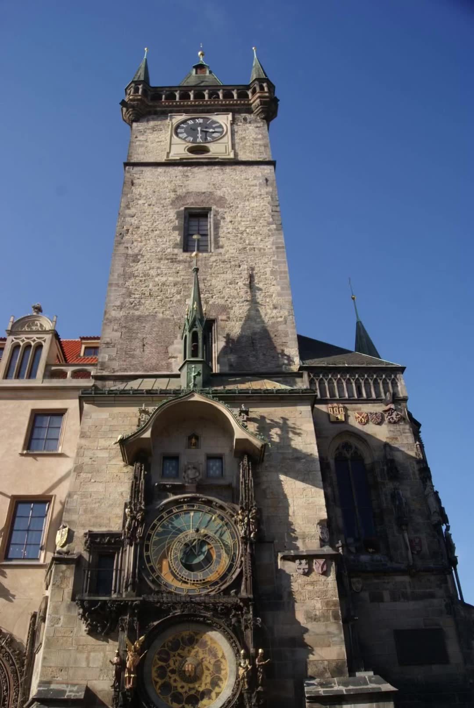
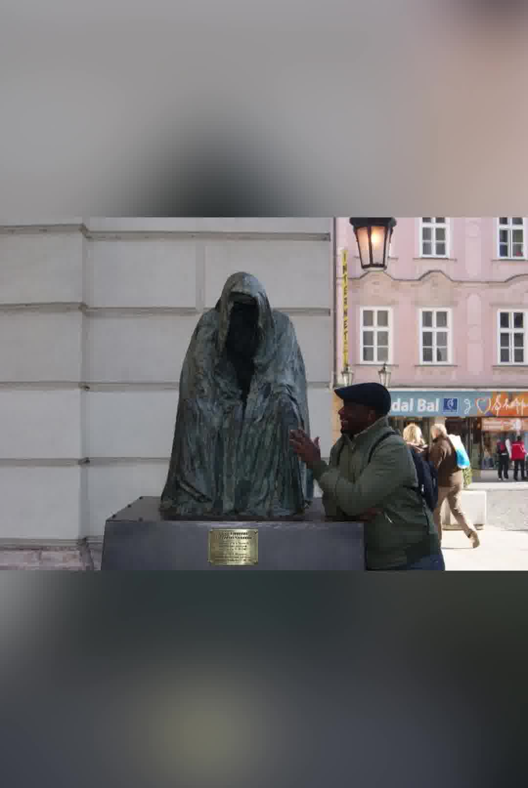
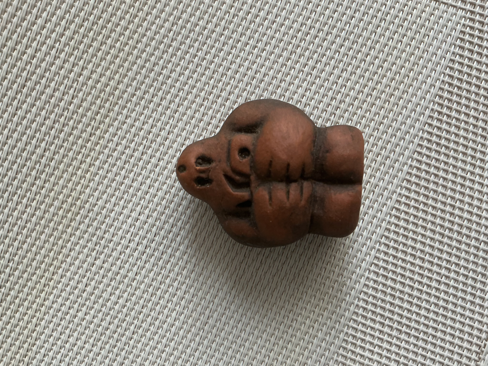
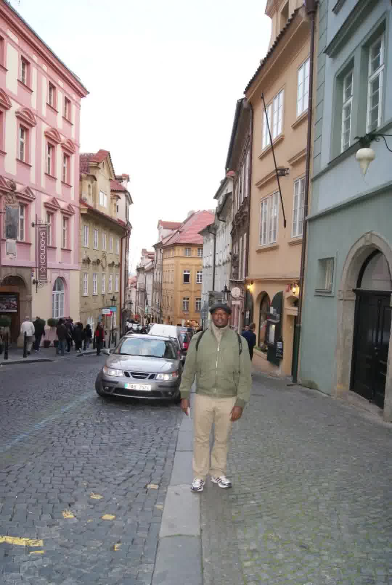
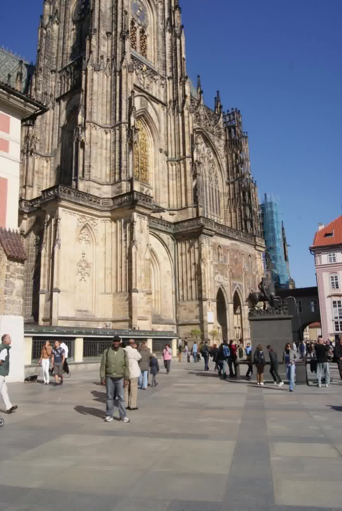

Des pavés de la Vieille Ville aux jardins secrets du Château, en passant par le Golem et les statues du Pont Charles
Récit photo · Automne
T
twagirumukizaVoyageur & conteur d’histoires · FR / EN / 中文
1 Les rues de la Vieille Ville
Dès les premiers pas, Prague vous avale. Pavés irréguliers, façades pastel, enseignes en fer forgé… On se croirait dans un décor de film.

La Porte de la Poudre (Prašná brána)
C’est ici que le voyage commence vraiment. Le bruit des valises sur les pavés, les conversations en dix langues, l’odeur du trdelník…
2 L’Horloge astronomique & la Place
La Place de la Vieille Ville est le théâtre permanent de Prague. Au centre, l’Orloj (1410) continue de fasciner les foules chaque heure.

Place de la Vieille Ville

Devant le cadran de l’Orloj
Anecdote : La légende raconte que le maître horloger Hanuš fut aveuglé pour qu’il ne puisse jamais reproduire une horloge aussi parfaite ailleurs.

Maisons gothiques et renaissance

Église Notre-Dame de Týn
Arrivez 10 minutes avant l’heure pile pour voir les apôtres défiler.
3 Le Pont Charles et ses statues
Traverser le Pont Charles, c’est marcher sur 500 ans d’histoire. Construit sous Charles IV à partir de 1357.
Tour du Pont de la Vieille Ville
Histoire des statues : Les 30 statues baroques datent surtout de 1683-1714. Saint Jean Népomucène (1683) est le plus touché pour le porte-bonheur. Le Calvaire (1657) porte des inscriptions hébraïques financées par une amende.
Le Calvaire du Pont Charles
Vers Malá Strana
Venez au lever du soleil : le pont est presque vide.
4 Le Golem de Prague
Créé au XVIe siècle par le Rabbi Loew pour protéger la communauté juive, cette créature d’argile reste la légende la plus célèbre de Prague.

Figurine du Golem
Le Rabbi plaçait un shem dans sa bouche pour lui donner vie. Certains disent qu’il repose encore dans le grenier de la Vieille-Nouvelle Synagogue.
5 Le Château & ses jardins secrets
Monter vers le Château est un rite de passage. Les escaliers pavés, la vigne rouge en automne, et la ville qui s’ouvre sous vos pieds.

Escaliers du Château
Cathédrale Saint-Guy

Mosaïque du Jugement dernier
Jardins secrets : Jardin sur le Rempart, Jardin de la Reine Anne, Jardin du Paradis… Ouverts dès 6 h, souvent presque vides le matin.
6 Le cimetière juif (Josefov)
J’y suis allé. Les photos ont disparu, mais le souvenir reste. Plus de 12 000 pierres tombales, certaines du XVe siècle. Tombe du Rabbi Loew.
Couverture pour les épaules demandée. Respectez le silence.
📍 Le voyage en un coup d’œil
Cliquez sur un point de la carte pour accéder directement au récit de la photo correspondante.
1. Vieille Ville2. Horloge3. Pont Charles4. Golem5. Château6. Cimetière juif
FAQ – Voyager à Prague
La couronne tchèque (CZK). Les euros sont rarement acceptés (ou à un mauvais taux). Prenez une carte Visa/Mastercard sans frais + un peu de cash.
Oui, globalement très sûre. Attention aux pickpockets dans les zones touristiques et aux taxis non officiels.
Prague reste majoritairement accueillante. Cependant, des voyageurs noirs, arabes ou asiatiques rapportent parfois des regards insistants, des refus d’entrée dans certains bars, ou des contrôles plus fréquents. Ce n’est pas systématique, mais la polémique existe.
Évitez les bars ultra-touristiques autour de la Place de la Vieille Ville (prix gonflés). Préférez les beer gardens (Letná, Riegrovy sady) et les bars de Vinohrady ou Žižkov. Certains bars de nuit ont une réputation sulfureuse.
Aéroport Václav Havel (PRG). Bus 119 → métro Nádraží Veleslavín. Comptez 40-60 min. Évitez les taxis non officiels.